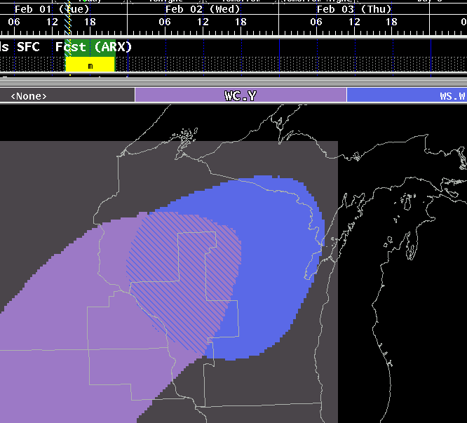
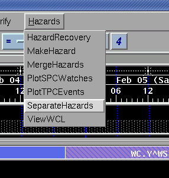
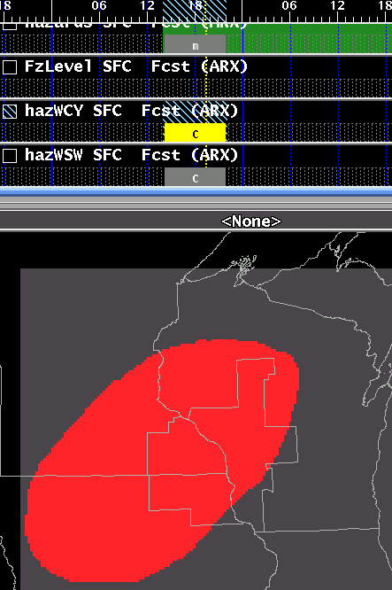
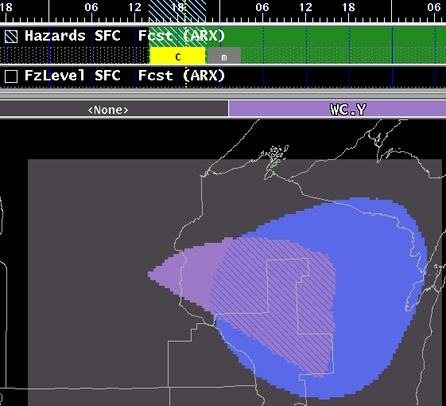

SeparateHazards
A Procedure for Separating the Hazard
grid into individual hazard elements
Methodology
How It Works
Methodology
The SeparateHazards procedure takes each individual hazard from
the Hazards grid, and splits it into individual temporary hazards grid.
In complex
situations, this allows the forecaster to modify a single hazard,
without
disturbing the actual Hazard grid. Once modified, the forecaster uses MergeHazards to composite the individual,
temporary hazard grids back into the Hazard grid.
In the following example, a Winter Storm Warning (WS.W) exists with a
combined Wind Chill Advisory (WC.Y). The forecaster would like to
extend the
period of the Wind Chill Advisory, without affecting the Winter Storm
Warning.

First, the forecaster selects SeparateHazards from the Hazards Menu.

This tool provides no user feedback, it simply breaks the Hazard
grid from the forecast database into it's individual elements. During
the time that the
forecaster has the elements separated, the Hazard grid remains locked,
to prevent others from
affecting the same grids.
The temporary grids will be named in the format:
"hazVTECWithoutDotoptionalETN" (ie., hazWSW1). Notice in the example
below, the Hazard grid has been separated into a hazWCY and hazWSW grid.

To modify only the Wind Chill Advisory, the forecast would either
use the MakeHazards tool, or standard
GFE editing tools like pencil, or stretching of grids to add
or remove zones and change the start or end time of the Wind Chill
Advisory. Notice in the example
below, the southwest portion of the Wind Chill Advisory has been
removed, and the advisory for the
northeast has been extended, as evidenced by the length of the hazWCY
grid.

Finally, the forecaster runs the MergeHazards
tool to recombine the temporary Hazard grids back into the actual
Hazards grid. Notice that the changed Wind Chill Advisory has
now been merged with the unchanged Winter Storm Watch.

How It Works
The SeparateHazards procedure looks at the Hazards grids inventory and
contents and separates each hazard into its own weather element.
The software ensures that the grids haven't already been separated and
then before proceeding will lock the entire Hazards weather
element. While your Hazards grids have been separated, no
other forecaster will be able to edit the Hazards grid.
The weather elements created as temporary grids and cannot be saved to
EDEX.